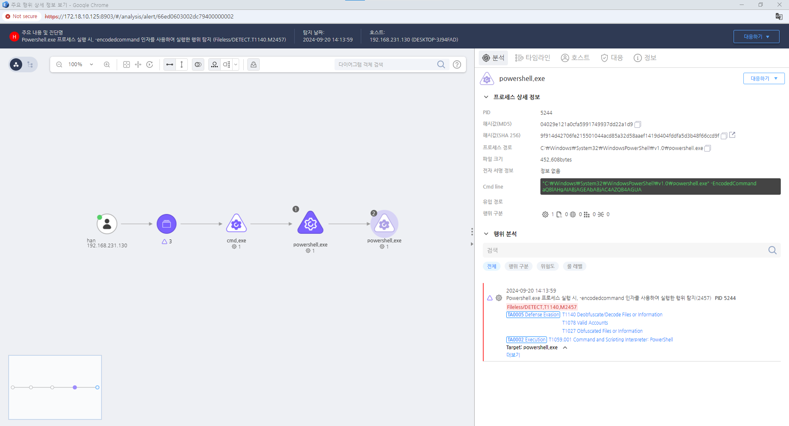

T1027.000.02 난독화된 파일 또는 정보
D3FEND
MITRE ATT&CK 액션을 기준으로 대응 방안을 작성
Detection
Action = "ProcessCreate" AND
TargetProcess = "powershell.exe" AND
Cmdline = "-encodedcommand" OR
"-encodedcomman" OR
"-encodedcomma" OR
"-encodedcomm" OR
"-encodedcom" OR
"-encodedco" OR
"-encodedc" OR
"-encoded" OR
"-encode" OR
"-encod" OR
"-enco" OR
"-en" OR
"-e"
Detection(EDR)

Response
해당 행위를 수행한 프로세스를 종료합니다.
Mitigations
악성 코드 탐지 강화
- 정적 및 동적 분석 도구 사용: 악성 파일이 난독화된 상태에서도 이를 분석할 수 있는 정적 분석 도구(예: Static Analysis Tools) 및 동적 분석 도구(예: Sandboxing)를 사용하여 파일이나 스크립트의 동작을 검사합니다.
- 파일 시스템 및 메모리 검사: 악성코드가 암호화되거나 난독화된 상태에서도 메모리 검사를 통해 비정상적인 동작을 탐지할 수 있습니다. EDR (Endpoint Detection and Response) 또는 AV (Antivirus) 솔루션을 사용하여 실시간 모니터링 및 행위 기반 탐지를 강화합니다.
스크립트 및 명령어 필터링
- 스크립트 실행 제어: PowerShell 스크립트나 Windows Script Host (WSH) 스크립트의 실행을 제어하여 악성 스크립트의 실행을 차단합니다. PowerShell 실행 정책을 설정하여 스크립트 실행을 제한하거나, 신뢰할 수 있는 서명된 스크립트만 실행되도록 합니다.
Set-ExecutionPolicy Restricted 명령을 사용하여 PowerShell 스크립트 실행을 제한할 수 있습니다.
- 명령어 필터링: 네트워크 및 시스템에서 특정 명령어나 패턴을 필터링하여 악성 명령의 실행을 방지합니다. 예를 들어, 네트워크 트래픽에서 base64 인코딩된 데이터나 암호화된 페이로드를 탐지하여 필터링합니다.
이상 징후 모니터링
- 행위 기반 탐지: 난독화된 악성 코드나 스크립트는 변형된 상태로 실행되지만, 그 실행 행위에는 공통된 특징이 있습니다. 예를 들어, 비정상적인 시스템 호출이나 네트워크 연결을 모니터링하여 의심스러운 행위를 탐지합니다.
- SIEM 시스템 사용: SIEM (Security Information and Event Management) 시스템을 사용하여 로그 및 네트워크 트래픽을 모니터링하고, 이상 징후를 실시간으로 분석하여 경고합니다.
파일 무결성 검사 및 분석
- 파일 무결성 검사: HIDS(Host-based Intrusion Detection System) 및 파일 무결성 모니터링 도구를 사용하여 시스템 내 파일의 변경 사항을 감지하고, 파일이 암호화되거나 변형되었을 때 이를 보고받습니다.
- 암호화된 파일 해독: 특정 파일 확장자나 암호화된 파일을 자동으로 해독하여 분석하는 기능을 제공하는 보안 솔루션을 도입합니다. 파일 분석 툴을 사용하여 파일의 내부 구조를 파악하고 악성 행위를 탐지합니다.
네트워크 보안 강화
- 암호화된 트래픽 탐지: 네트워크 보안 솔루션을 사용하여 암호화된 트래픽을 탐지하고, 이를 해독하여 악성코드가 HTTPs, SSL/TLS 등을 통해 전달되는 경우 이를 필터링하거나 분석할 수 있도록 합니다.
- 네트워크 트래픽 분석: SSL 검사 또는 Deep Packet Inspection (DPI)을 사용하여 암호화된 트래픽을 복호화하고 악성 트래픽을 탐지합니다.
권한 관리 및 접근 제어
- 최소 권한 원칙: 공격자가 파일이나 명령어를 난독화하여 악성 행위를 시도하는 경우, 최소 권한 원칙을 적용하여 시스템의 관리 권한을 최소화하고, 불필요한 사용자 계정에 대한 권한을 제한합니다.
- 정책 기반 접근 제어: 파일 시스템 및 네트워크에 대한 접근 제어를 강화하여, 정상적인 사용자만 중요한 시스템 리소스에 접근할 수 있도록 합니다.
보안 패치 및 취약점 관리
- 정기적인 보안 패치: 난독화된 악성 코드가 취약한 소프트웨어 또는 운영 체제의 취약점을 악용할 수 있습니다. 따라서 정기적인 보안 패치와 업데이트를 통해 알려진 취약점을 방지합니다.
- 취약점 관리: 취약점 스캐너를 사용하여 시스템의 취약점을 점검하고, 이를 패치하여 난독화된 악성 코드가 취약점을 악용하는 것을 차단합니다.
운영 체제 및 응용 프로그램의 보안 설정 강화
- 기본 보안 설정 강화: Windows Defender, AppLocker, Device Guard와 같은 보안 기능을 사용하여 악성 소프트웨어가 시스템에 침투하는 것을 방지합니다.
- 비정상적인 파일 실행 탐지: 실행되지 않도록 설정된 파일이 의도적으로 실행되는 경우를 탐지하고 차단하는 보안 정책을 구현합니다.
다단계 인증 및 인증 강화
- 다단계 인증(MFA): 공격자가 파일이나 명령어를 난독화하여 접근하려는 시도를 차단하기 위해 다단계 인증(MFA)을 적용하여 시스템 접근 시 추가 인증을 요구합니다.
- 강력한 인증 방식 사용: OAuth, Kerberos와 같은 강력한 인증 메커니즘을 사용하여 시스템 접근을 보호합니다.
사용자 교육 및 인식 제고
- 사용자 교육: 사용자가 악성 이메일 첨부 파일 또는 링크를 클릭하여 난독화된 악성 코드를 실행하지 않도록 교육합니다.
- 사회 공학적 공격 방지: 사회 공학적 공격(예: 피싱 공격)에 대한 교육을 통해 사용자가 의심스러운 파일이나 링크를 열지 않도록 합니다.
Affected Techniques
Action 실행시 함께 영향을 받는 다른 Techniqes
| D3FEND |
| D3-FA File Analysis |
| D3-FCA File Content Analysis |
| D3-FH File Hashing |